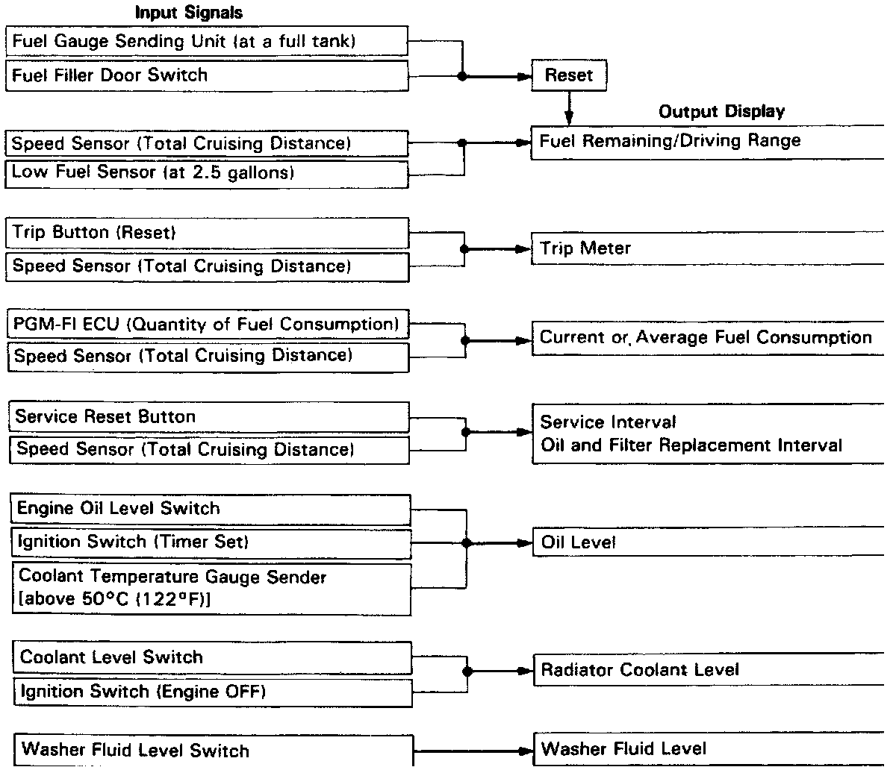

Maintenance Required Lamp/Indicator: Description and Operation

The digital display in the upper center of the dashboard can provide a variety of driving information and service reminders. By repeatedly pushing the TRIP FUNCTION button, the display changes from the clock to Remaining Fuel/Driving Range, Trip Meter/Clock, Current Fuel Consumption, Average Fuel Consumption and back to the clock. By repeatedly pushing the SYSTEM CHECK button, the display changes from the clock to Next Service Interval, Next Oil/Filter Replacement, Oil Level Check, Radiator Coolant Level Check, Washer Fluid Level Check and back to the clock. For the function of the information system, please see the owner's manual.